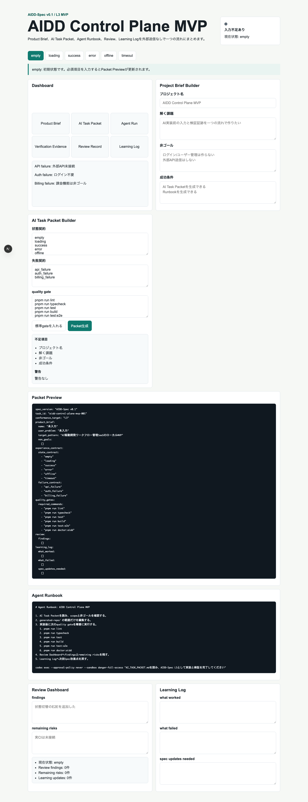
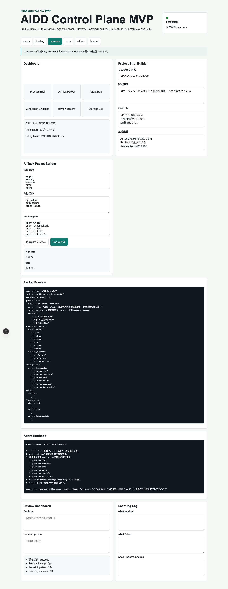
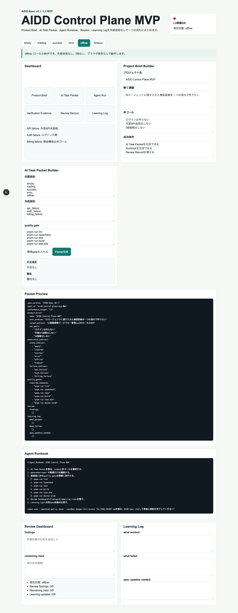
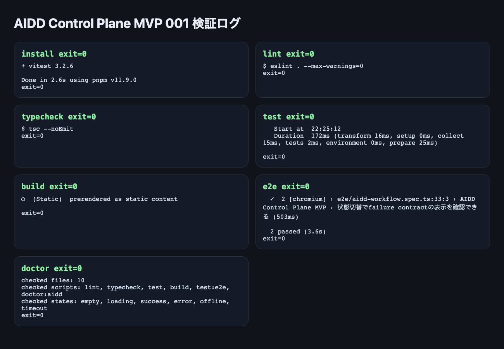

AIDD Control Plane MVP 001：AIDD-SpecをSaaSの画面に落とし込む最初の実装
2026-06-28 / Codex Mastery Lab
対象: AIDD Control Plane MVP / Next.js / AIDD-Spec v0.1
結果: L3ローカルMVPとして、Product Brief → AI Task Packet → Agent Runbook → Review → Learning Logの流れを実装・検証できた
先に結論
前回は、AIDD-Spec v0.1 draftを作り、IssueBrief Lite という小さな静的アプリで「Spec準拠入力をAIエージェントへ渡すと、期待した出力構造が作れるか」を検証した。
今回はその次として、AIDD-Specの考え方を SaaSの画面 に落とし込んだ。
作ったもの:
experiments/aidd-control-plane-mvp-001/generated-repo/実装した画面:
- Dashboard
- Project Brief Builder
- AI Task Packet Builder
- Packet Preview
- Agent Runbook
- Review Dashboard
- Learning Log
検証結果:
pnpm install --frozen-lockfile exit=0
pnpm run lint exit=0
pnpm run typecheck exit=0
pnpm run test 4 tests passed / exit=0
pnpm run build exit=0
pnpm run test:e2e 2 passed / exit=0
pnpm run doctor:aidd exit=0ただし、これはまだ完成SaaSではない。
今回の到達点は、AIDD Control PlaneのL3ローカルMVP である。
画面キャプチャ
まず、初期状態ではAIDD Control Planeが「何を作る画面なのか」を1ページで見せている。Dashboard、Project Brief Builder、AI Task Packet Builder、Packet Preview、Agent Runbook、Review Dashboard、Learning Logが同時に見える。

入力後は、Product BriefからAI Task PacketとAgent Runbookが更新される。ここで重要なのは、quality gateが最初から見えていることだ。ユーザーは「AIに何を作らせるか」だけでなく、「何を通したら完了か」も同時に確認できる。

failure contractも画面で確認できる。今回は外部API未接続、ログイン不要、課金機能は非ゴールという制約を明示し、AIが余計なログイン/DB/APIへ逸れないようにした。

最後に、検証ログも画像として残した。記事を読む人が、単なる説明ではなく実行結果の形で確認できるようにするためである。

何を作りたかったのか
AIDD Control Planeは、AIにコードを書かせるだけのSaaSではない。
主価値は、AIエージェントに渡す前後の流れを標準化することにある。
Product Brief
-> AI Task Packet
-> Agent Runbook
-> Verification Evidence
-> Review Record
-> Learning Log
-> Spec ImprovementAIエージェント開発で本当に困るのは、「コードが書けるか」だけではない。
むしろ困るのは次である。
- 依頼文が曖昧
- 非ゴールがない
- 状態設計がない
- 検証コマンドがない
- 完了証跡が残らない
- 失敗が次回の指示に戻らない
そこで今回のMVPでは、コード生成そのものではなく、AIに渡す入力と検証証跡を作る画面 を作った。
AI Task Packetを先に作る
今回もいきなり実装しない。
先にAIDD-Spec v0.1形式のAI Task Packetを書いた。
experiments/aidd-control-plane-mvp-001/AI_TASK_PACKET.md主な指定はこうだ。
| 項目 | 指定内容 |
|---|---|
| Stack | Next.js App Router + TypeScript + pnpm |
| UI | 日本語 |
| Non-goals | ログインなし、外部APIなし、DBなし、localStorageなし |
| Scope | generated-repo/ のみ |
| State Contract | empty/loading/success/error/offline/timeout |
| Failure Contract | API未接続、ログイン不要、課金非ゴール |
| Quality Gates | lint/typecheck/test/build/E2E/doctor |
| Evidence | terminal logs、review、learning log |
ここで重要なのは、非ゴールをかなり強く書いた ことだ。
SaaSを作ると言うと、AIはログイン、DB、外部API、保存機能を勝手に入れたくなる。
しかし今回の目的は、まず「誰でも辿れるワークフローの画面」を作ることだった。
だから、ログイン・DB・外部APIは非ゴールにした。
Codexへ渡した
Codexには次を読ませた。
AGENTS.md
standards/aidd-spec-v0.1.md
standards/aidd-control-plane-mvp-v0.1.md
experiments/aidd-control-plane-mvp-001/AI_TASK_PACKET.mdそして、次の範囲で生成させた。
experiments/aidd-control-plane-mvp-001/generated-repo/生成された主なファイル:
app/page.tsx
app/layout.tsx
app/globals.css
src/lib/aidd.ts
tests/aidd.test.ts
e2e/aidd-workflow.spec.ts
scripts/doctor-aidd.mjs
docs/product-brief.md
docs/review-record.md
docs/learning-log.md
docs/verification-evidence.md画面としてできたこと
実画面では、以下を同一ページで辿れる。
1. Dashboard
AIDDワークフロー全体を表示する。
Product Brief
AI Task Packet
Agent Run
Verification Evidence
Review Record
Learning Log外部API未接続、ログイン不要、課金機能は非ゴールというfailure contractも見える。
2. Project Brief Builder
次を入力できる。
- プロジェクト名
- 解く課題
- 非ゴール
- 成功条件
3. AI Task Packet Builder
次を入力/確認できる。
- 状態契約
- 失敗契約
- quality gate
ここは一度手動確認で引っかかった。
初期実装では「標準gateを入れる」ボタンでquality gateを入れる想定だったが、手動デモでは分かりにくかった。
そこで、標準quality gateは初期表示するように修正した。
pnpm run lint
pnpm run typecheck
pnpm run test
pnpm run build
pnpm run test:e2e
pnpm run doctor:aiddこの方が、配信や記事で見せたときに「何を証跡として見るのか」がすぐ分かる。
4. Packet Preview
入力内容からAI Task Packet風のYAMLを生成する。
spec_version: "AIDD-Spec v0.1"
task_id: "aidd-control-plane-mvp-001"
conformance_target: "L3"
product_brief:
name: "AIDD Control Plane MVP"
quality_gates:
required_commands:
- "pnpm run lint"
- "pnpm run typecheck"
- "pnpm run test"
- "pnpm run build"
- "pnpm run test:e2e"
- "pnpm run doctor:aidd"5. Agent Runbook
Codexへ渡す作業手順とコマンド例を表示する。
1. AI Task Packetを読み、scopeと非ゴールを確認する。
2. generated-repo/ の範囲だけを編集する。
3. 実装後にquality gateを順番に実行する。
4. Review Dashboardへfindingsとremaining risksを残す。
5. Learning Logへ次回Spec改善点を戻す。6. Review Dashboard
findings と remaining risks を入力できる。
7. Learning Log
次を入力できる。
- what worked
- what failed
- spec updates needed
つまり、AIDD-Specで定義した「実装後に学びをSpecへ戻す」入口が画面になった。
検証結果
今回はL3ローカルMVPなので、CIではなくローカルで以下を実行した。
pnpm install --frozen-lockfile
pnpm run lint
pnpm run typecheck
pnpm run test
pnpm run build
pnpm run test:e2e
pnpm run doctor:aidd結果:
| Command | Result |
|---|---|
pnpm install --frozen-lockfile | exit=0 |
pnpm run lint | exit=0 |
pnpm run typecheck | exit=0 |
pnpm run test | 4 tests passed / exit=0 |
pnpm run build | exit=0 |
pnpm run test:e2e | 2 passed / exit=0 |
pnpm run doctor:aidd | exit=0 |
E2Eでは次を確認している。
- 主要ワークフローでPacket PreviewとRunbookが更新される
- 状態切替でfailure contractの表示を確認できる
doctor:aidd
今回追加した doctor:aidd は、AIDD Control Planeとして最低限の契約を満たしているかを確認する静的検査である。
確認しているもの:
- 必須ファイル
- 必須npm scripts
- 必須UI copy
- empty/loading/success/error/offline/timeout
- localStorage/sessionStorage/fetch/XMLHttpRequest/WebSocket禁止
- 外部URL禁止
結果:
doctor:aidd passed
checked files: 10
checked scripts: lint, typecheck, test, build, test:e2e, doctor:aidd
checked states: empty, loading, success, error, offline, timeout
exit=0今回のスコア
自己評価では 92 / 100 とした。
理由はこうだ。
| 観点 | 評価 |
|---|---|
| AIDD-SpecのSaaS画面化 | できた |
| AI Task Packet生成 | できた |
| Agent Runbook生成 | できた |
| Review / Learning Log | できた |
| 状態/失敗契約 | E2Eとdoctorで確認できた |
| L3ローカル検証 | できた |
| CI / artifact / GitHub連携 | 未実装 |
| 永続化 | 未実装 |
| 複数プロジェクト | 未実装 |
したがって、完成SaaSではない。
ただし、AIDD Control Planeの核である「AIへ渡す入力と検証証跡を作る流れ」は画面になった。
今回分かったこと
1. AIDD-SpecはSaaS画面に変換できる
AIDD-Spec v0.1の成果物モデルは、抽象的な文章だけではなかった。
実際に、次の画面へ変換できた。
Product Brief Builder
AI Task Packet Builder
Agent Runbook
Review Dashboard
Learning Logこれは大きい。
なぜなら、AIDD-Specを単なる標準仕様書ではなく、プロダクトにできる可能性が見えたからだ。
2. Non-goalsはSaaS実装でも効く
今回、非ゴールに次を書いた。
ログインは作らない
外部API送信はしない
DB接続はしない
localStorageも使わないその結果、Codexはログイン、DB、API保存に逸れなかった。
AIDD-Specで非ゴールを強く書く価値が、SaaS MVPでも確認できた。
3. デモでは重要なgateを最初から見せるべき
初期実装では、quality gateはボタンで挿入する設計だった。
E2E上は通ったが、手動でデモすると「今どのgateを見るべきか」が分かりにくかった。
そこで標準gateを初期表示するように直した。
これは小さい修正に見えるが、AIDD Control Planeでは重要だ。
このSaaSは、ユーザーに「何を確認すればよいか」を見せる道具だからである。
次に作るべきもの
次はL4へ近づける。
候補は以下。
- GitHub Actions workflowを追加する
- coverage / Playwright reportをartifact化する
- Packet / Evidence / Review / Learning LogをJSON Schemaで検証する
- 複数Project / 複数Packetを扱う
- Evidence uploadのUIを作る
- Spec Improvement提案を自動生成する
次回のAI Task Packetは、次のどれかに絞るのがよい。
AIDD Control Plane MVP 002: JSON Schema + Contract Checker
AIDD Control Plane MVP 002: Evidence Collector UI
AIDD Control Plane MVP 002: GitHub Actions L4化まとめ
今回、AIDD-Spec v0.1からAIDD Control Plane MVPへの最初の実装ができた。
AIDD-Spec v0.1
-> AI Task Packet
-> Codex実装
-> Next.js MVP
-> lint/typecheck/test/build/E2E/doctor
-> Review Record
-> Learning Logまだ完成SaaSではない。
しかし、AIDD-Specを「仕様書」から「誰でも辿れるSaaSワークフロー」へ変換する最初の画面はできた。
次は、このMVPをL4化し、CIとartifactまで接続する。